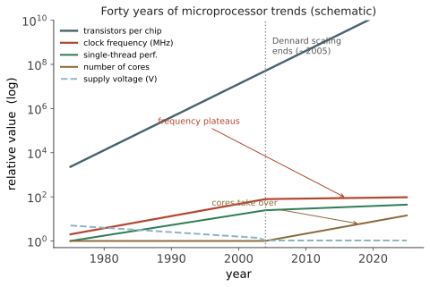

本页目录
器件 IV · 缩放定律与功耗墙
层次：本科核心 ｜ 这是全课的枢纽页，也是与 🔗 cs 站严丝合缝对接的地方。 摩尔定律常被当作一句预言口号。它其实是一套具体的物理与经济逻辑：为什么把晶体管做小会同时变快、变省电、变便宜；以及为什么这套逻辑在 2005 年前后部分失效了——而那次失效，直接造成了你在 cs 站学到的一切（多核、加速器、异构计算）。
学习层：晶体管缩小，为什么曾经能免费换来速度？
1. 具体谜题：\(0.7\) 倍缩放后，功率密度到底变不变？
把一个满足 Dennard 假设的逻辑单元的所有线性尺寸缩成 \(s=0.7\)。如果供电电压也缩成 \(0.7V_{DD}\)，频率提高到 \(1/0.7\) 倍，单管功耗与每平方毫米的功率密度会怎样？现在做同样的几何缩放，但把 \(V_{DD}\) 固定不降，哪一个账本先爆掉？
这不是在背“摩尔定律”的年份，而是在检查一组量是否同时闭合。先预测面积密度、单管动态功耗、功率密度和允许同时点亮的晶体管比例，再思考亚阈值摆幅为什么让“电压跟着尺寸缩”变得困难。
2. 先预测：三种缩放量谁在帮助，谁在收费？
实验先隐藏结果。请对 \(s=0.7\) 做四个判断：
- 面积是原来的 \(0.7\) 还是 \(0.49\)？
- Dennard 电压缩放时，单管动态功耗是否降到约 \(0.49\)？
- 电压不降时，功率密度是否仍保持不变？
- 若低阈值导致关态电流每下降 \(60\ \mathrm{mV}\) 增加十倍，静态功耗应当被当作小修正还是独立约束？
3. 最小心智模型：一张密度、速度、热预算的账单
用 \(s\) 表示线性尺寸缩放因子。一个简化单元拥有面积、等效电容 \(C\)、供电电压 \(V\) 和频率 \(f\)。动态功耗不是一个孤立的器件数，而是“单管功耗”乘以“单位面积可放多少管”；热设计则还要乘以同时活动的比例。
这个模型只描述同构、稠密、动态功耗主导的趋势。真实节点还受互连 RC、漏电、器件结构、良率、封装和成本约束；因此实验把 Dennard 结果标为“在假设成立时的归一化推导”，不把它当作今天的行业预测。
4. 形式机制与不变量：Dennard 的闭合条件
在一阶比例模型中
于是单管动态功耗 \(P_{\mathrm{gate}}\sim CV^2f\mapsto s^2P_{\mathrm{gate}}\)，面积密度 \(D_A\mapsto D_A/s^2\)，两者相乘得到
若 \(V\) 固定，单管动态功耗约为原值，功率密度则按 \(1/s^2\) 增长；若只能让部分单元活动，热约束给出 \(a_{\max}\le P_{\mathrm{budget}}/P_{\mathrm{density}}\)。另一方面，亚阈值电流近似满足
所以阈值、电源电压和关态漏电不能独立选择。真正可审计的不变量是缩放假设下的功率密度相等，而不是“晶体管总数增加就能同时工作”。
5. 交互实验：用两种电压策略重放功耗墙
无 JavaScript 时的静态读法：以未缩放单元 \(C=V=f=\mathrm{area}=1\) 为基准，\(s=0.7\) 时面积、密度和频率按上面的比例计算。先忽略短路功耗，把活动因子设为 1。
| 策略 | 面积 | 密度 | \(V\) | \(f\) | 单管 \(CV^2f\) | 功率密度 | 热预算内活动比例 |
|---|---|---|---|---|---|---|---|
| Dennard | 0.49 | 2.04 | 0.70 | 1.43 | 0.49 | 1.00 | 1.00 |
| 电压固定 | 0.49 | 2.04 | 1.00 | 1.43 | 1.00 | 2.04 | 0.49 |
脚本允许改变 \(s\in[0.5,1]\)、活动因子和亚阈值摆幅 \(SS\)，同步画出密度、频率、动态功率密度和“暗硅”比例。默认热预算归一化为 1；当固定电压使功率密度达到 2.04 时，最多只能让约 49% 的缩放后单元同时活动。漏电倍率用 \(10^{\Delta V_{th}/SS}\) 显示，并明确标为 Boltzmann 近似的教学账本。
6. 反例与失效边界：摩尔定律、Dennard 与性能不是同一个命题
- 摩尔定律描述晶体管数量的经验趋势，不保证单线程性能、频率或每晶体管成本。
- Dennard 缩放依赖电压、尺寸和电场同步变化；当 \(V_{DD}\) 停滞、互连 RC 或漏电主导时，功率密度不再保持。
- “把频率降下来就能解决所有功耗”忽略静态漏电和热反馈；动态项随 \(f\) 下降，漏电项不一定下降。
- 功率密度归一化不等于芯片可无限扩展；封装散热、IR 压降、电迁移、存储墙和设计成本都可能先成为瓶颈。
7. 迁移题：把器件约束翻译成计算机结构
当只有一半晶体管能同时点亮时，应该选择多核、专用加速器、时钟门控还是更大的缓存？请用 \(\alpha CV_{DD}^2f+I_{\mathrm{leak}}V_{DD}\) 逐项说明决策，并指出哪一项来自器件的 \(60\ \mathrm{mV/decade}\) 极限。你的回答应把“频率封顶”与 cs 站的并行化、异构化联系起来。
一、摩尔定律说的是什么
摩尔定律（1965，1975 修订）：集成电路上的晶体管数量约每两年翻一番。
必须澄清三点：
- 它不是物理定律，而是一个经济与工程的经验观察，甚至是一个自我实现的行业路线图（大家都按这个节奏投资研发）；
- 它说的是晶体管数量，不是速度、不是性能；
- 它至今仍在缓慢延续（靠 3D 结构、封装堆叠），但成本效益已大幅恶化——每个晶体管的成本不再随节点稳定下降，这是当前最实质的变化。
二、Dennard 缩放：真正的引擎
让摩尔定律转化为"更快更省电"的，是 Dennard 缩放（1974）。规则是：把所有尺寸与电压同时按因子 \(\kappa\)（约 0.7）缩小。
| 量 | 缩放 | 后果 |
|---|---|---|
| 尺寸 \(L, W, t_{ox}\) | \(\times\kappa\) | 面积 \(\times\kappa^2\) → 密度翻倍 |
| 电压 \(V_{DD}\) | \(\times\kappa\) | — |
| 掺杂 | \(\times 1/\kappa\) | 维持电场不变 |
| 电场 | 不变 | 可靠性维持 |
| 电流 | \(\times\kappa\) | — |
| 延迟 \(\sim CV/I\) | \(\times\kappa\) | 速度提升 ~1.4 倍 |
| 单管功耗 \(\sim CV^2f\) | \(\times\kappa^2\) | — |
| 功率密度 | 不变 | 免费的午餐 |
这就是那三十年奇迹的全部秘密：晶体管数量翻倍、频率提升、而每平方毫米的功耗保持不变。芯片可以越做越复杂、越跑越快，散热却不恶化。
关键在"电场不变"：电压和尺寸同比缩小，内部电场维持恒定，器件物理与可靠性都保持相似。一切依赖于电压能跟着一起降。
三、为什么它死了：60 mV/decade
Dennard 缩放的崩塌，根源在上一页那个数字。
电压不能继续降的原因链：
- 要维持性能，需要足够的过驱动 \(V_{DD} - V_{th}\) → 想降 \(V_{DD}\) 就得降 \(V_{th}\)；
- 但亚阈值摆幅 \(SS \ge 60\) mV/dec 是玻尔兹曼极限，所以 \(V_{th}\) 每降 60 mV，关态漏电就上升十倍；
- 于是静态功耗（漏电）爆炸性增长，抵消甚至超过动态功耗的节省；
- 结果：\(V_{DD}\) 在约 1 V 附近停滞（从 5 V 一路降到约 1 V 后基本卡住）。
\(V_{DD}\) 不再下降，而密度继续翻倍，于是：
中的 \(V_{DD}^2\) 不再帮忙 → 功率密度开始飙升。

四、功耗墙与它的直接后果
功率墙（power wall）：芯片能耗散的热量有上限（约 100 W/cm² 量级，受封装与散热限制）。一旦触顶，就不能再靠提频率换性能。
行业的三个应对，全部写在 cs 站的课程表里：
① 多核：既然单核不能更快，就并行。"免费午餐结束了"——软件必须显式并行化才能享受新硬件（🔗 cs 站并行线、par-01）。这是一次由器件物理引发的软件范式转变。
② 暗硅（dark silicon）：晶体管还在变多，但不能同时全部点亮——否则超出功率预算。于是芯片上总有一部分处于关闭状态。这直接催生了专用加速器：既然不能全开，不如放置多种专用单元，按需点亮最合适的那个（第十七页）。
③ 专用化与异构：GPU、NPU、各类固定功能单元。通用性换能效比——同样的运算，专用电路的能效可比通用 CPU 高一到两个数量级（🔗 cs 站 GPU/MLSys 线）。
这一条因果链值得完整记住：
热力学的一个常数，重塑了整个计算机产业。
五、功耗的三个来源
设计者面对的功耗预算由三部分组成：
- 动态功耗：电容充放电。\(V_{DD}^2\) 是最有力的旋钮——这就是为什么低功耗设计首选降压（DVFS：动态电压频率调节）；
- 短路功耗：翻转瞬间 NMOS/PMOS 同时导通，一般占比较小（通过控制信号转换斜率来抑制）；
- 静态漏电：亚阈值漏电 + 栅隧穿漏电 + 结漏电。在先进节点，漏电可占总功耗的相当大比例，且随温度指数上升——形成"越热越漏、越漏越热"的正反馈（热失控风险）。
对抗手段（都是权衡）：多阈值电压器件（关键路径用低 \(V_{th}\) 快管、非关键路径用高 \(V_{th}\) 省电管）、电源门控（power gating，整块关断）、时钟门控、DVFS、以及第五页的器件结构革新。
六、缩放今天的处境
仍在进行的：晶体管密度依然提升（靠 FinFET → GAA、以及设计–工艺协同优化）。
已经停止的：
- Dennard 缩放（2005 年前后）——电压不再跟着降；
- 成本缩放——每晶体管成本在先进节点趋平甚至上升。EUV 设备、掩模、设计费用（先进节点一次流片的设计成本可达数亿美元量级）都在暴涨；
- SRAM 面积缩放明显放缓——这对缓存密集的处理器影响很大（第十页）。
"节点名称"的真相：现在的"3nm""2nm"不对应任何物理尺寸——它们是市场命名，不同厂商之间也不可直接比较。真正有意义的指标是接触栅间距（CPP）、金属间距（MMP）、以及每平方毫米晶体管数。看到节点数字，先问它指的是什么。
行业的新方向（后面各页展开）：
- 器件结构：FinFET → GAA → CFET（第五、十九页）；
- 不再只靠"做小"，而是"堆叠与拼装"：3D 集成、Chiplet（第十五页）；
- 专用化与近存计算（第十六、十七页）。
下一页：既然继续缩小会遭遇短沟道效应，器件工程师是怎么应对的？从体硅 MOSFET 到 FinFET 再到环栅纳米片——一条被"栅控能力"这一个概念串起来的演进史。